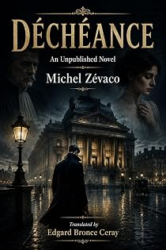

Déchéance
An unpublished novel, in English for the first time
by Michel Zévaco · translated by Edgard Bronce-Ceraypar Michel Zévaco · traduit par Edgard Bronce-Ceray
The bookLe livre
A crowded street in a far quarter of Paris. A man passes unnoticed: fresh gloves, impeccable hat, tall and powerfully built, silvered at the temples, a calm confident strength in every gesture — and a face closed to all emotion. An unpublished novel, never printed in Zévaco's lifetime, appearing here in English for the first time.
Une rue populeuse d'un quartier lointain de Paris. Un homme passe sans qu'on le remarque : gants frais, chapeau impeccable, grand et puissamment bâti, les tempes argentées, une force calme et sûre dans chaque geste — et un visage fermé à toute émotion. Un roman inédit, jamais imprimé du vivant de Zévaco, ici en anglais pour la première fois.
From the opening pagesLes premières pages
•
A crowded street, lost somewhere in a distant quarter of Paris.
Along this street, amid the ceaseless comings and goings of the busy throng, a man passes by, unnoticed. He is elegantly dressed, wearing fresh gloves, an impeccable top hat crowning his head. He is plainly a perfect gentleman, accustomed to luxury.
He is tall, powerfully built, still young, despite his silvered temples. A calm and confident strength shows in his every gesture. But his face, impassive, unreadable, seems closed to all emotion. There must be a heart of bronze in that broad chest.
He walks with a supple, assured step, at a pace neither too slow nor too quick. Everything in his bearing suggests a tranquil force. Nothing would let you suppose that some secret anxiety might be at work within him.
And yet, without a sign of it, his fiery eye, as he goes, takes the measure of every passerby with a deep, sure look, so swift that no one can notice it. He never turns around. But from time to time he stops before a shop window. Then, while all his attention seems fixed on the objects displayed behind the glass, he casts about him that same inquisitorial glance, extraordinarily quick.
And he sets off again, at the same supple, assured pace. To all appearances, he is a harmless stroller.
The man arrives before a large middle-class house, of rather handsome appearance. He stops on the threshold of the great door. He takes his case from his pocket, draws out a cigarette, and lights it without haste—which allows him to sweep the street with a wary glance.
He goes in.
He crosses a small courtyard, drawing puffs of smoke from his cigarette, enters the rear wing of the building, starts up the stairway, and begins to climb without hurrying.
At that moment, on the flagstones of the courtyard, there rings out a sound of hurried footsteps that the man's keen ear—no doubt on the alert—catches distinctly.
As though this sound of footsteps—natural enough, in such a place—unleashed a sudden and unaccountable terror in the mind of this man so cold, so strong, who seems so master of himself, he breaks, right then, into a violent, headlong rush: he flings himself up the stairs, taking the steps two at a time.
Truly, to see him, one might believe some mortal threat hung over him.
What, then, does he fear?
And yet the sound of footsteps that seems to have thrown him into a panic has stopped on the first floor. The sharp click of a door closing shows that it was simply a tenant coming home.
But this time he did not hear it.
Wild in his movements, his breath hoarse, he keeps up his climb. He reaches the top, the very top, beneath the cap of zinc where the garret rooms lie. A single bound brings him before a closed door. With prodigious speed the door is opened and, like a hurricane, he plunges into the room. In haste—but with what sure and rapid hand—he shuts the door again. And his convulsed face betrays the anguish gripping him as, leaning against the door, he listens for anyone behind him climbing the stairs.
No, he hears no sound. No one has followed him.
He straightens slowly, lets out a long breath, steps back, recovers himself.
The man finds himself in a poor little garret, tiny: four paces are enough to cross from the door to the window—and even then one must not take too great a stride. A narrow iron bed, a wretched table of white wood, a coarse straw-bottomed chair furnish it.
Small as it is, that is not enough to furnish it. It is enough to sharpen its sinister look.
Is this the retreat of that elegant gentleman?
So it would seem.
The dwelling of some poor wretch? Or the lair of a cutthroat?
We shall soon know.
The man comes forward, removes his hat and his ample overcoat, which he throws onto the bed. He goes to the humble table and lays down his gloves—and also the revolver he had been clutching in his clenched fist while, panting, he listened behind the door.
Near the table, the revolver before him, well within reach, he lets himself drop heavily onto the single chair.
Then, feverishly, he searches himself and draws from his pocket a newspaper he must have read and reread, for the sheet is all crumpled. Hungrily he looks for the passage that strikes him like a sentence of death.
It is a news item, its title standing out in large type:
THE STRANGER HAS RETURNED TO FRANCE
This Stranger, whose return the paper announces, is a fearsome bandit long thought dead, who had simply gone prudently to hide beyond the seas, and who, believing himself no doubt forgotten, had returned to France three months ago.
The article recalls the long series of crimes committed by the Stranger over the course of his tormented existence as a hardened criminal. And it is a frightful catalogue: blackmail, swindles, thefts, forgeries, murders. Griefs and ruins heaped up by this elusive man, whom people are reduced to designating by the name of the Stranger, because no one has ever been able to uncover his true identity—this man driven by every audacity, who has never known pity, just as he knows nothing of remorse.
And even so, only his known crimes are recalled here, those that can be laid to him with full assurance, because the proofs of his guilt abound.
But how many other unsuspected misdeeds, more horrible perhaps, weigh upon his conscience?
He alone can know.
Now, this Stranger, this bandit—it is he! This terrifying history is his own.
The Stranger—we shall leave him this name, since no other is known for him—the Stranger skips over the details, which he knows infinitely better than the reporter who has made himself his biographer.
And his eyes, as though drawn by some irresistible magnet, go at once to the last lines, blazing for him:
"Thus, at the very moment he was believed long dead, he was pursuing his career as a criminal adventurer in America. Now he is back. But his trail has been found, he is being followed step by step, and this time he will not escape."
So this man, this elegant gentleman, this Stranger, is a bandit hunted by the police of two continents!
He is about to be arrested, handed over to justice, to the scaffold!
This explains the suspicious attention with which, in the street, he scrutinized every passerby. This also explains the violent emotion that shook him when, believing himself followed, we saw him bound up his stairs four steps at a time and fling himself into his wretched lodging.
But the reading of this alarming article has frayed his nerves, already stretched to breaking and no longer within his control. His overheated imagination conjures maddening threats, chimerical though they are. Once more, and all at once, terror descends upon him: he drops the newspaper, seizes the revolver, and growls:
"Someone's coming up! They're coming for me! I'm going to be taken! Thunder! They won't have me!"
In a single bound, revolver in hand, he runs to the door to mount a last defense. And in his supple movements, in his formidable stance, we recognize then a wild beast ready to kill, a fearsome predator of the social jungle.
The excerpt ends here — about 1,237 words of the published edition.L'extrait s'arrête ici — environ 1,237 mots de l’édition parue.
KindlePaperbackBrochéContextContexte
Zévaco was a schoolmaster, then a cavalry officer, then an anarchist journalist who fought duels over his editorials and went to prison for his convictions. He came to the novel in his forties and conquered it at once: from 1900 his serials ran in the great Paris dailies and were read by millions. Sartre, remembering his childhood in Les Mots, called him a writer of genius. He has been read in Persian, Turkish, Arabic, Romanian and Spanish. In English, for more than a century, he was effectively unavailable. The Zévaco Project is the first attempt ever made to translate his complete novels — one volume at a time, until the canon is closed.
Zévaco fut maître d'école, puis officier de cavalerie, puis journaliste anarchiste — un homme qui se battait en duel pour ses éditoriaux et fit de la prison pour ses convictions. Il vint au roman passé la quarantaine et le conquit aussitôt : à partir de 1900, ses feuilletons paraissaient dans les grands quotidiens parisiens et se lisaient par millions. Sartre, se souvenant de son enfance dans Les Mots, le tenait pour un écrivain de génie. On l'a lu en persan, en turc, en arabe, en roumain, en espagnol. En anglais, pendant plus d'un siècle, il fut pratiquement introuvable. Le Projet Zévaco est la première tentative jamais faite de traduire son œuvre romanesque complète — un volume après l'autre, jusqu'à la clôture du corpus.
The whole programmeTout le programme